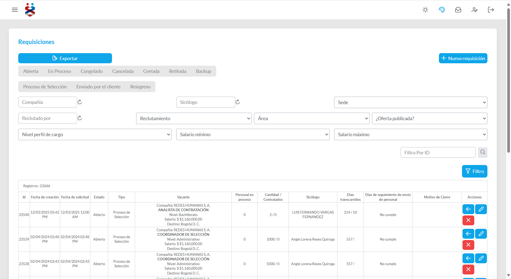
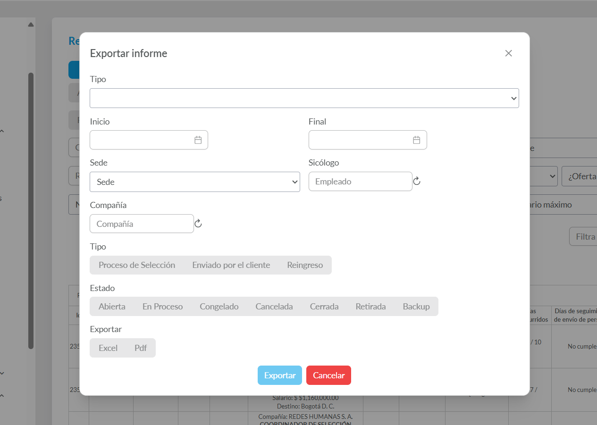
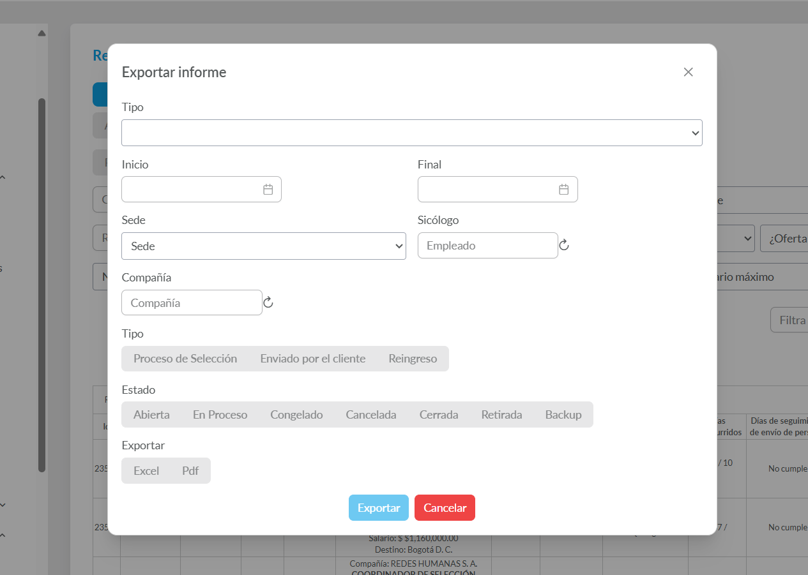
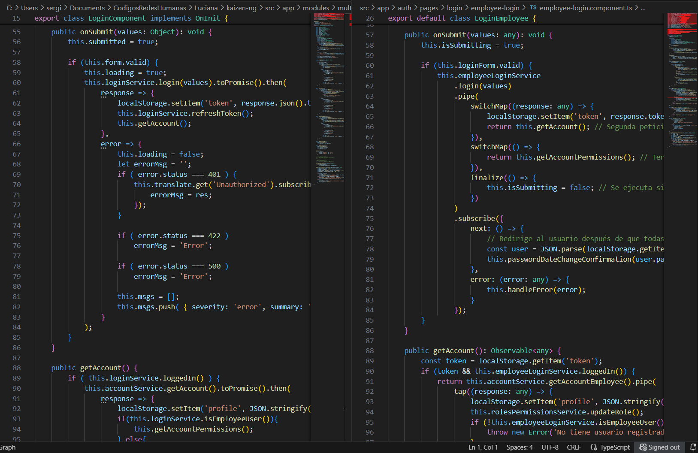

üöÄ Modernizaci√≥n del Frontend: Migraci√≥n de Angular v2 a v19
üìñ Resumen y Contexto del Proyecto
Este documento detalla el proyecto de modernización del frontend para la plataforma Luciana, migrando una base de código heredada en Angular v2 a una arquitectura moderna con Angular 19.
El frontend original, aunque funcional, presentaba desafíos que impactaban la velocidad de desarrollo, el rendimiento y la escalabilidad. Los principales problemas eran:
- Deuda Técnica Acumulada: Lógica de negocio compleja y fuertemente acoplada en los componentes.
- Rendimiento Deficiente: Tiempos de carga lentos que afectaban la experiencia del usuario.
- Experiencia de Desarrollo (DX) Obsoleta: Ecosistema de herramientas anticuado que ralentizaba la depuración y la innovación.
- Riesgos de Seguridad: Dependencias desactualizadas y sin soporte oficial.
El objetivo fue ejecutar una reescritura estratégica para sentar bases sólidas para el futuro de la plataforma.
üõ†Ô∏è Tecnolog√≠as Clave
- Lenguajes: TypeScript, SCSS, HTML5
- Framework y Librerías: Angular 19, RxJS, PrimeNG
- Arquitectura: Modular, Carga Perezosa (Lazy Loading), Standalone Components
- Gestión de Estado: Servicios Reactivos con RxJS (
BehaviorSubject) - Herramientas: Angular CLI, Visual Studio Code, Git
üéØ Mi Rol y Responsabilidades
Como Líder Técnico y Desarrollador Principal, mis responsabilidades clave fueron:
-
üèõÔ∏è Dise√±o de Arquitectura y Planificaci√≥n:
Lideré la investigación y definición de la nueva arquitectura del frontend. Diseñé la hoja de ruta de migración, seleccioné herramientas y establecí las mejores prácticas para el equipo. -
üß™ Prueba de Concepto (PoC):
Desarrollé una PoC para validar la integración de la nueva aplicación (v19) con el backend existente, permitiendo una migración incremental sin afectar los servicios actuales. -
üèóÔ∏è Desarrollo del Núcleo de la Aplicaci√≥n:
Implementé la estructura base, incluyendo módulos compartidos, servicios transversales (autenticación, gestión de estado con RxJS), interceptores HTTP y guardias de rutas. -
üöÄ Liderazgo en la Migraci√≥n de M√≥dulos:
Guié y participé activamente en la reescritura de los primeros módulos clave, estableciendo un estándar de código y demostrando valor tangible desde las primeras etapas.
üèõÔ∏è Arquitectura Propuesta
Diseñé una arquitectura modular y escalable, centrada en el rendimiento y la mantenibilidad a largo plazo.
graph TD
subgraph Angular_19_App
A[App Module]
B_core[Core Module]
C_shared[Shared Module]
D_features[Feature Modules - Lazy Loaded]
A --> B_core
A --> C_shared
A --> D_features
B1_auth[Auth Guard]
B2_http[Http Interceptor]
B3_services[Servicios Singleton]
B_core --> B1_auth
B_core --> B2_http
B_core --> B3_services
C1_ui[Componentes UI]
C2_pipes[Pipes y Directivas]
C_shared --> C1_ui
C_shared --> C2_pipes
D1_login[Login Module]
D2_dashboard[Dashboard Module]
D3_candidatos[Candidatos Module]
D_features --> D1_login
D_features --> D2_dashboard
D_features --> D3_candidatos
end
E_api[API Backend]
B2_http -->|Realiza llamadas| E_api
üîë Principios Clave de la Arquitectura
- Carga Perezosa (Lazy Loading): Los módulos de funcionalidades solo se cargan bajo demanda, reduciendo drásticamente el tiempo de carga inicial y mejorando el First Contentful Paint (FCP).
- Componentes Reutilizables: Creación de una librería de componentes agnósticos en el
SharedModulepara mantener la consistencia visual (look and feel) y acelerar el desarrollo. - Gestión de Estado Reactiva: Uso de servicios con RxJS (BehaviorSubject) para manejar el estado como una fuente única de verdad, garantizando la consistencia de datos en toda la aplicación.
- Separación de Responsabilidades (SoC): La lógica de negocio fue aislada en servicios, permitiendo que los componentes se centraran exclusivamente en la presentación y la interacción del usuario.
ü߆ Desaf√≠os T√©cnicos y Soluciones
1. Planificación de una Migración sin Interrumpir el Negocio
Desafío: La aplicación era un monolito. Reescribirla por completo era inviable debido al riesgo y al tiempo requerido.
Solución: Propuse una estrategia de migración modular e incremental. Identifiqué los módulos más críticos y aislados (Autenticación, Dashboard) para migrarlos primero. Esto permitió demostrar valor rápidamente y crear una base sólida sobre la cual construir, minimizando el riesgo.
2. Eliminación de Inconsistencias de Datos
Desafío: En la versión v2, los datos eran inconsistentes entre diferentes vistas, causando bugs y confusión al usuario.
Solución: Implementé un patrón de gestión de estado reactivo. Creé servicios que actuaban como la única fuente de verdad (por ejemplo, UsuarioService).
Los componentes se suscribían a observables de estos servicios. Cuando un dato cambiaba (por ejemplo, el perfil del usuario), todos los componentes suscritos se actualizaban automáticamente, garantizando la consistencia en tiempo real.
3. Optimización Radical del Rendimiento
Desafío: La plataforma antigua sufría de tiempos de carga de más de 10 segundos.
Solución: Aproveché las optimizaciones nativas de Angular 19. La compilación AOT (Ahead-of-Time) y el tree-shaking redujeron el tamaño del paquete JavaScript inicial en aproximadamente un 80%.
Combinado con la carga perezosa, los módulos migrados cargaban de forma casi instantánea.
üèÜ Logros y Resultados Clave
Aunque el proyecto global de migración se pausó por una decisión estratégica de la compañía, la fase que lideré fue un éxito rotundo y sentó las bases para el futuro.
✅ Arquitectura Base Completada al 100%:
Se finalizó la estructura del nuevo proyecto, incluyendo un sistema de autenticación robusto, interceptores, guardias y módulos compartidos.
üöÄ M√≥dulos Cr√≠ticos Migrados y Funcionales:
- Autenticación y Login
- Dashboard Principal
- Portal de Candidatos (Consulta y Gestión Documental)
- Requisiciones
- Operaciones
- Contratos
üìä Mejoras de Rendimiento Cuantificables:
- Reducción del tiempo de carga inicial (First Contentful Paint) en un ~70% en los módulos migrados.
- Navegación entre vistas prácticamente instantánea, eliminando la fricción del usuario.
üí° Prueba de Concepto Validada:
El trabajo sirvió como una PoC exitosa, dejando una hoja de ruta clara y una base de código moderna lista para ser retomada.
üñºÔ∏è Galer√≠a de Mejoras Visuales y de Calidad
Esta galería muestra el impacto multifacético del proyecto, enfocándose en la experiencia de usuario y la calidad del código.
| Maqueta de la Nueva UI (Conceptual) | Calidad y Buenas Prácticas (Lighthouse) |
|---|---|
|  |  |
| Librería de Componentes (PrimeNG) | Refactorización de Código |
     |
 |
üí° Reflexi√≥n y Aprendizajes
Este proyecto fue un desafío de gran envergadura que consolidó mis habilidades en arquitectura de software frontend, planificación estratégica y liderazgo técnico.
Aprendí a gestionar la complejidad de modernizar sistemas heredados, a tomar decisiones críticas sobre el stack tecnológico y a demostrar el valor de la inversión en tecnología a través de resultados medibles.
La base que construimos dejó a la plataforma en una posición mucho más fuerte para su futura evolución.